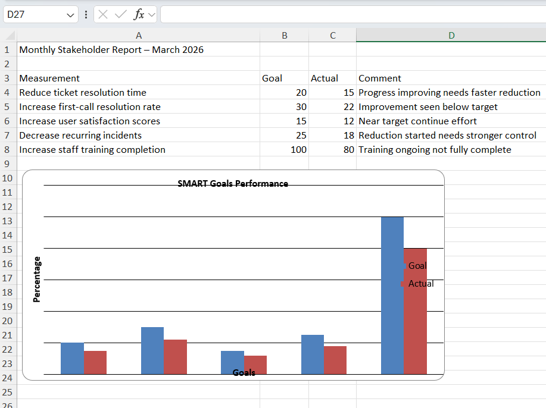

OPS Plan Overview
Introduction
- Komalpreet Kaur, help desk supervisor, developing fiscal year operations plan.
Picture

Reason for Plan
- Provide fiscal year internal help desk operations plan overview.
Mission
- Deliver reliable support maximizing productivity, satisfaction, operational efficiency.
Vision
- Become trusted internal technology support leader driving service excellence.
SMART Goals With User Benefits
- Reduce ticket resolution time twenty percent by December 2026.
- User benefit: Faster service improves productivity.
- Increase first-call resolution rate thirty percent by December 2026.
- User benefit: Immediate solutions minimize workflow interruption.
- Increase user satisfaction scores fifteen percent by November 2026.
- User benefit: Improved confidence strengthens system trust.
- Decrease recurring incidents twenty-five percent by October 2026.
- User benefit: Reduced downtime increases efficiency.
- Increase staff technical training completion one hundred percent by September 2026.
- User benefit: Accurate solutions reduce repeated problems.
Monthly Stakeholder Report – March 2026

- Reduce ticket resolution time twenty percent by December 2026.
- Progress improving needs faster reduction
- Increase first-call resolution rate thirty percent by December 2026.
- Improvement seen below target
- Increase user satisfaction scores fifteen percent by November 2026.
- Near target continue effort
- Decrease recurring incidents twenty-five percent by October 2026.
- Reduction started needs stronger control
- Increase staff technical training completion one hundred percent by September 2026.
- Training ongoing not fully complete
Feedback Statement
- Open feedback welcomed. Email: komalpreetbrar09@email.com Tel: 647-993-1582